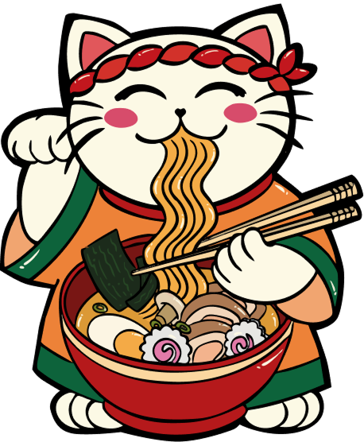

<section class="hero">
  <div class="container">
    <div class="hero__content">
      <div class="hero__content-info">
        
        <h1>Disfruta del auténtico <span>ramen</span> japonés</h1>
        <p>
       Caldo tradicional elaborado a fuego lento con ingredientes locales, fuego y alma. Una receta centenaria traída directamente desde el corazón de Tokio a Madrid
        </p>
        <button class="button-secondary">Ver carta</button>
      </div>
      <div class="img-container">
        
      </div>
    </div>
    <div class="hero__rrss">
      <ul>
        <p>@nekoramen</p>
        <li>
          <i class="fa-brands fa-square-facebook"></i>
        </li>
        <li>
          <p><i class="fa-brands fa-instagram"></i></p>
        </li>

        <li><i class="fa-brands fa-square-x-twitter"></i></li>
      </ul>
      <div class="border-top w-100"></div>
    </div>
  </div>
</section>
